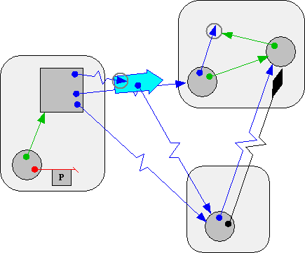

| |
The Vat |
||||||
E is a distributed programming language. The set of all machines executing Local-E interpreters and hooked up to the internet via the E Network Protocol, Pluribus, jointly constitute the Distributed E Virtual Machine. Distribution requires concurrency, and large-scale distribution as well as secure distribution requires loosely-coupled asynchrony, so we need some notion of separate computational subworlds that can proceed forward simultaneously. In E, this notion is the Vat.

Rounded rectangles are Vats, circles and normal rectangles are objects, thin arrows are references (i.e., capabilities), and the thick stubby arrow is a message. A machine may host many Vats. At any moment, a Vat should only exist on one machine. A Vat hosts many objects. Any given object is hosted by exactly one Vat.
The evolution of the object-to-object reference topology just follows the logic of the abstract object/capability model, without regard to Vat boundaries. Vat boundaries show up in the semantics in a number of other places, in order to reflect the inescapable issues of distributed systems: concurrency, asynchrony, several kinds of partial failure, resource control, and decentralized administration. One might almost say half of E exists to allow the programmer to ignore the problems of distributed computation where possible, and the other half exists to enable the programmer to deal with problems of distributed computation where necessary.
-
Reference Mechanics explains the different kinds of live references, shown by the different colors of thin arrows with non-diamond arrowheads above. The diagram at the end of this chapter explains all the reference notations used in the above diagram.
-
Message Passing explains the ways one object can message another, one example of which is shown by the thick stubby arrow above.
-
Handling Partial Failure explains how SturdyRefs -- the arrow with the diamond-shaped arrowhead above -- are used to maintain connectivity and recover consistency after the failures that distributed systems are subject to -- that can temporarily or permanently sever the connections between vats.
-
Object Passing explains the difference between the objects shown as circles, which are PassByProxy, and objects shown as rectangles, which are PassByConstruction (usually PassByCopy). The normal Granovetter diagram shows the passing of a reference to a PassByProxy object, Carol. By contrast, the number 3 is PassByCopy. If Alice had passed a 3 to Bob, Bob would receive a NEAR (green) reference to a copy of this 3 in his own Vat.
Each Vat executes concurrently with all other Vats, but there is no concurrent execution within a Vat. In this sense, a Vat is vaguely like a traditional OS process -- it bundles together a single thread of control and an address space of synchronously accessible data, and so avoids the need for bug-prone fine-grained locking on this data. Unlike a traditional OS process, a Vat's thread is necessarily a non-blocking event loop servicing a queue of pending deliveries.
Each pending delivery is a pair of a message and a recipient to whom it should be delivered. Each time around the loop, the Vat-thread extracts a pending delivery from the queue, and calls the recipient with the message. This top-level call executes to completion before the next pending delivery is processed. The synchronous computation performed in service of a single pending delivery is a turn.
- Game Turns as MicroTransactions explains the strong atomicity properties provided by E, simply, and without explicit locking or mutual exclusion constructs.
Unless stated otherwise, all text on this page which is either unattributed or by Mark S. Miller is hereby placed in the public domain.
| |
|
report bug (including invalid html)
|
||||||||